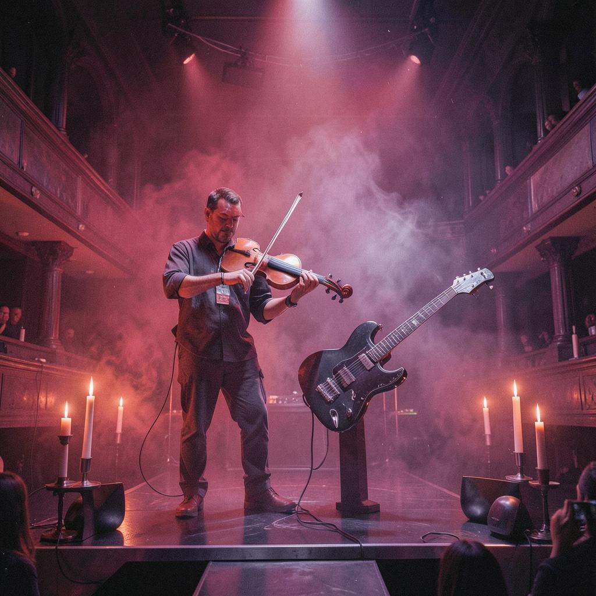
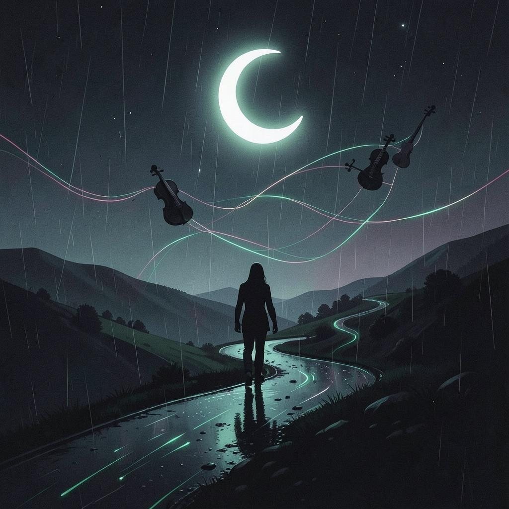
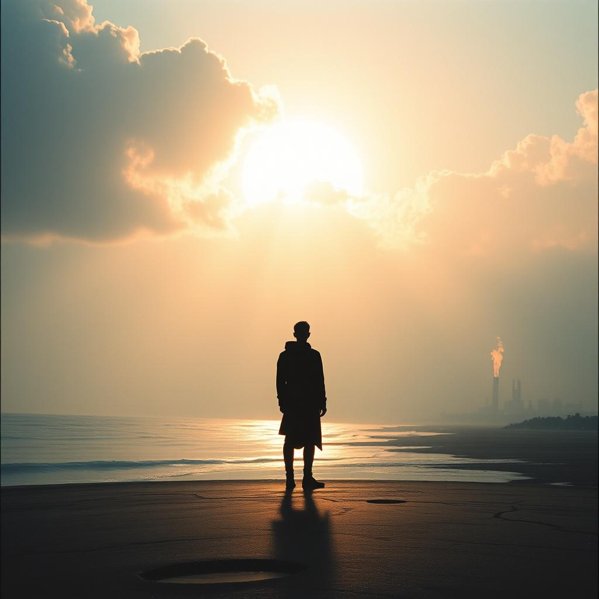
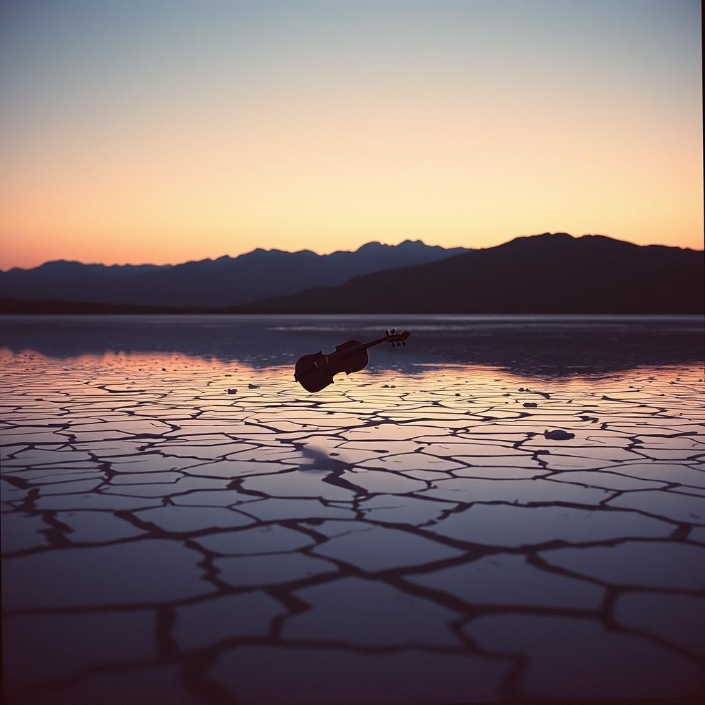
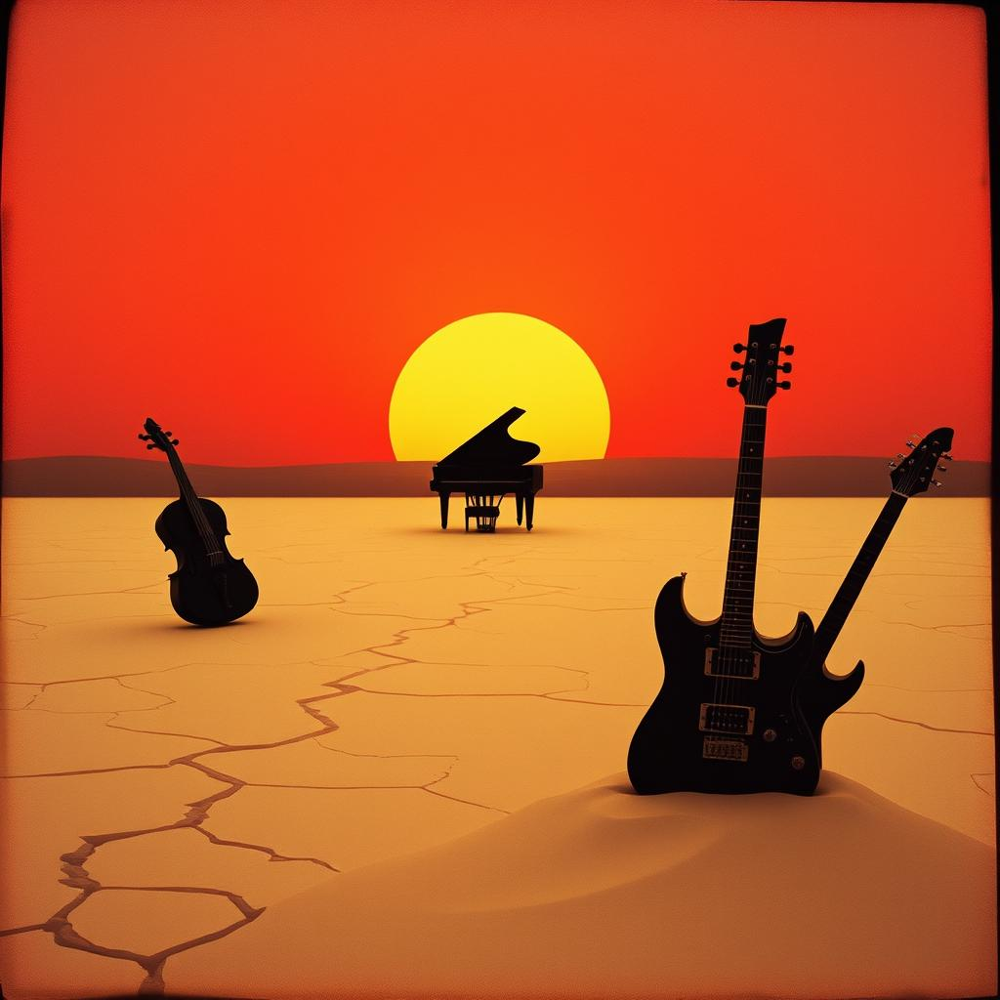
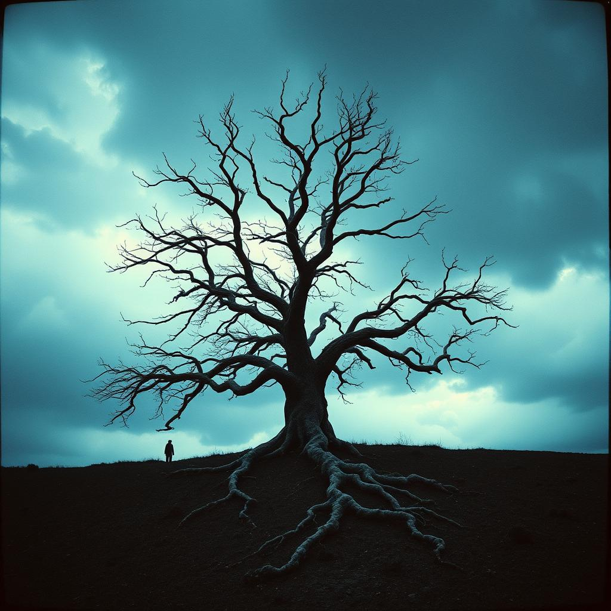
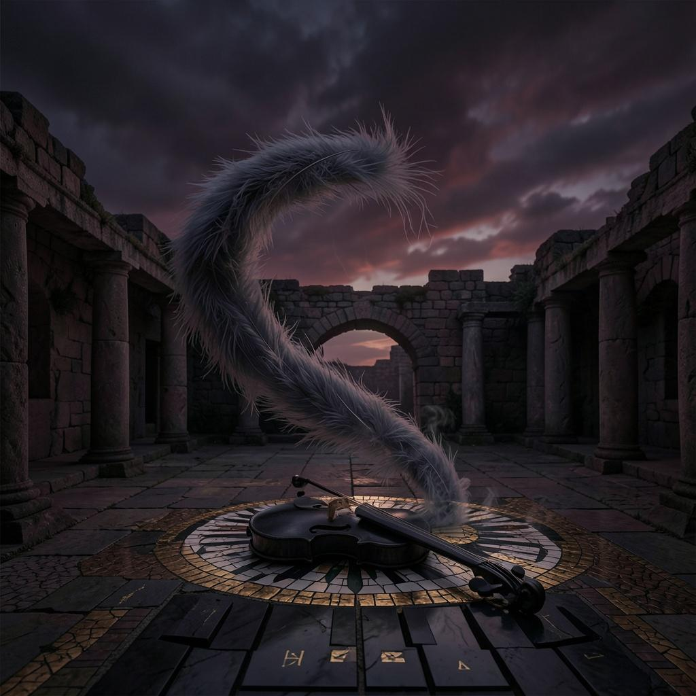

Şarkılar
EserV201
3:53
[Intro] (Melancholic piano and clean electric guitar arpeggios) (Soft, near-whisper, emotional vocals) [Verse 1] Aşkın kıldı şeyda beni, cümle âlem bildi beni, Kaygım sensin dün ü günü, bana sen gereksin sen. [Verse 2] (Tight rock drum beat enters, building tension) Gözüm açtım seni gördüm, canım içinde can gördüm, Dünyayı ben arkaya attım, bana sen gereksin sen. [Chorus] (Massive cathartic explosion, dramatic strings and crunchy electric guitars) (Full-throated, powerful, raspy vocal delivery) Sûfîlere tâat gerek, ahirette rahat gerek, Mecnunlara Leyla gerek, bana sen gereksin sen! [Verse 3] (Drums soften, heavy tension, soulful and strained vocals) Eğer beni öldürseler, külüm göğe savursalar, Toprağım çağırsa orada: Bana sen gereksin sen. [Instrumental Bridge] (Magnificent and emotional duet between virtuosic Violin and soaring distorted Electric Guitar) (Violin carries profound sorrow, guitar responds with raw defiant cries) (Building to a massive, shared cathartic climax) [Chorus] (Maximum intensity, symphonic explosion, violins and heavy rock drums) (Powerful, raspy, full-throated epic delivery) Sûfîlere tâat gerek, ahirette rahat gerek, Mecnunlara Leyla gerek, bana sen gereksin sen! [Outro] (Defiant and powerfully cathartic) Hoca Ahmed’dir benim adım, gece gündüz yanar odum, İki cihanda umudum... bana sen gereksin sen. (Final heavy guitar chord sustained, fading with a lonely piano outro) [End]
02
4:07
[Verse 1] Aşk sevdası başıma düştü, hayranıyım, Gece gündüz ağlayarak giryanıyım. Canı candan feda kılıp kurbanıyım, Aşk pazarı ulu pazar, girdim işte. [Verse 2] Erenlerin meclisinde mumlar yanar, O muma pervane olan canlar yanar. Hak aşkıyla dertli olan bağır yanar, Aşk pazarı ulu pazar, girdim işte. [Chorus] Hu diyelim, canlar ile Hu diyelim, Aşk yolunda başımızı feda edelim. Bu dünyadan derviş olup biz geçelim, Hu diyelim, canlar ile Hu diyelim. [Verse 3] Dünya malı fani imiş, bildim uyan, Hani hani bu dünyada baki kalan? Hak yoluna baş koymayan olur yalan, Aşk pazarı ulu pazar, girdim işte. [Bridge] Kul Ahmed’im söyler sözü baştan başa, Aşk ateşi düşmüş yanar içten içe. Bu fani dünya kalmaz hiçbir cana, Yana yana hasret ile bittim işte.
03
4:02
[Intro] (Melancholic piano and clean electric guitar arpeggios) (Soft, near-whisper, emotional vocals) [Verse 1] Aşkın kıldı şeyda beni, cümle âlem bildi beni, Kaygım sensin dün ü günü, bana sen gereksin sen. [Verse 2] (Tight rock drum beat enters, building tension) Gözüm açtım seni gördüm, canım içinde can gördüm, Dünyayı ben arkaya attım, bana sen gereksin sen. [Chorus] (Massive cathartic explosion, dramatic strings and crunchy electric guitars) (Full-throated, powerful, raspy vocal delivery) Sûfîlere tâat gerek, ahirette rahat gerek, Mecnunlara Leyla gerek, bana sen gereksin sen! [Verse 3] (Drums soften, heavy tension, soulful and strained vocals) Eğer beni öldürseler, külüm göğe savursalar, Toprağım çağırsa orada: Bana sen gereksin sen. [Instrumental Bridge] (Magnificent and emotional duet between virtuosic Violin and soaring distorted Electric Guitar) (Violin carries profound sorrow, guitar responds with raw defiant cries) (Building to a massive, shared cathartic climax) [Chorus] (Maximum intensity, symphonic explosion, violins and heavy rock drums) (Powerful, raspy, full-throated epic delivery) Sûfîlere tâat gerek, ahirette rahat gerek, Mecnunlara Leyla gerek, bana sen gereksin sen! [Outro] (Defiant and powerfully cathartic) Hoca Ahmed’dir benim adım, gece gündüz yanar odum, İki cihanda umudum... bana sen gereksin sen. (Final heavy guitar chord sustained, fading with a lonely piano outro) [End]
04

2:46
Can verme sakın aşka aşk afeti candır Aşk afeti can olduğu meşhuru cihandır Sakın isteme sevdayı gam aşkta her an Kim istedi sevdayı gamlı aşk ziyandır Her ebrulu güzel elinde bir hançeri honriz Her zülfü siyah yanında bir zehirli yılandır Yahşi görünür yüzleri güzellerin emma Yahşi nazar ettikte sevdaları yamandır Aşk içre azap olduğu bilirem kim Her kimseki aşıktır işi ahü figandır Yadetme güzel gözlülerin merdümi çeşmin Merdüm deyip aldanma kim içtikleri kandır Gel derse Fuzuli ki güzellerde vefa var Aldanmaki şair sözü elbette yalandır.
05

5:51
[Verse 1] Yollarında yürüdüm yıllar boyunca Adını söyledim gece boyunca Bir ışık aradım karanlıklarda Sesini duydum kalbimin içinde Dünya geçti önümden bir rüzgar gibi Ne kaldı elimde senden başka ki Bir damla sevgin yeter bana Bütün dertler silinir bir anda [Pre-Chorus] Her nefeste seni andım Her düşüşte sana sığındım Kaybolduğum her yerde Yine seni aradım [Chorus] Bir gün sana kavuşacak mıyım Yüzünü görüp susacak mıyım Gece gündüz seni aradım Bir gün sana ulaşacak mıyım Bir gün sana kavuşacak mıyım Hasretimi bırakacak mıyım Bu gönlüm hep seni çağırır Bir gün seni bulacak mıyım [Verse 2] Kırık kalplerde seni gördüm Yetimlerin duasında büyüdüm Bir garibin gözyaşında Rahmetinin izini sürdüm Dağlar aşsam yollar bitmez Sensiz geçen ömür yetmez Bir adım at bana doğru Bu gönül sensiz nefes almaz [Pre-Chorus] Her nefeste seni andım Her düşüşte sana sığındım Kaybolduğum her yerde Yine seni aradım [Chorus] Bir gün sana kavuşacak mıyım Yüzünü görüp susacak mıyım Gece gündüz seni aradım Bir gün sana ulaşacak mıyım Bir gün sana kavuşacak mıyım Hasretimi bırakacak mıyım Bu gönlüm hep seni çağırır Bir gün seni bulacak mıyım [Bridge] Ne taht isterim ne de taç Ne altın isterim ne de güç Bir damla aşkın yeter bana Başka hiçbir şey istemem Ne dünya kalır ne zaman Ne ayrılık ne de hüzün Sen yeter ki yanımda ol Her şey sonsuz olur o gün [Final Chorus] Bir gün sana kavuşacağım Gözlerinde kaybolacağım Gece gündüz seni arayan Bu gönülle sana varacağım Bir gün sana kavuşacağım Hasretimi bırakacağım Bu gönlüm hep seni çağırdı Sonunda sana ulaşacağım [Outro] La ilahe illallah... La ilahe illallah... Kalbim seninle Allah'ım... Kalbim seninle Allah'ım...
06

4:28
artık görünmüyor mevsimde hüzün bulutlar bir garip rüyaya dalmış ufukta güneşi ağlatan yüzün bir mültecî gibi tenhâda kalmış toprak yandı gülüm; çeşmeler zehir şimdi bilsen de bir, bilmesen de bir kaç kere çağırdım seni öteden turnalar uçurdum gittiğin yere bin parça eyledin kalbimi neden ruhum bir başına düştü göklere bana tebessümle bakıyor kabir şimdi gülsen de bir, gülmesen de bir derdimin yangını sardı gölgeni bir mahkûm kanıyla aktı izlerin deniz ölesiye severken seni neden gemileri yaktı gözlerin yıkıldı yolunu bekleyen şehir şimdi gelsen de bir, gelmesen de bir yağmurun inceden yağdığı yerde açan gül acıyı damıtır solar ağustos böceği düşünce derde içine kuşların sevdası dolar ölü bir mahzene gömüldü kibir artık sevsen de bir, sevmesen de bir çatladı en kavî yerinden tohum kıvılcım düşürdü sulara gonca her akşam ölümü koklayan ruhum seni de kuşanır hâkan olunca bu yerde bilinir destân-ı kebir şimdi kalsan da bir, kalmasan da bir zaman ki, ardımda pervane şimdi mekân defineler döktü yoluma fırtınadan umut bekleyen kimdi söyle, deniz neden gömüldü kuma zindan çöktü gülüm; kırıldı zincir benim olsan da bir, olmasan da bir
07
3:38
Hayat su misali süzülüp gider Vahşi derelerin selinde kalır Rüyasında gamlı bülbül ''ah'' eder, Yankısı bir hayal gülünde kalır Gözlerim kararır; biter hevesim Yokluğun sesinde kısılır sesim Sevginle yaşayan, coşan nefesim Siyah saçlarının telinde kalır Güneş doğar, batar; bir yıldız kayar Ay hüzne bürünür, karalar giyer O gün, feryadımı kainat duyar Ruhum sonsuzluğun ilinde kalır Instrumental Gözlerim kararır; biter hevesim Yokluğun sesinde kısılır sesim Sevginle yaşayan, coşan nefesim Siyah saçlarının telinde kalır Günlerce gezersin hayalim ile Nihayet varırsın sen de menzile Kimsenin aklına gelmese bile Bu sevda tarihin dilinde kalır.
08

3:23
Hayat su misali süzülüp gider Vahşi derelerin selinde kalır Rüyasında gamlı bülbül ''ah'' eder, Yankısı bir hayal gülünde kalır Gözlerim kararır; biter hevesim Yokluğun sesinde kısılır sesim Sevginle yaşayan, coşan nefesim Siyah saçlarının telinde kalır Güneş doğar, batar; bir yıldız kayar Ay hüzne bürünür, karalar giyer O gün, feryadımı kainat duyar Ruhum sonsuzluğun ilinde kalır Instrumental Gözlerim kararır; biter hevesim Yokluğun sesinde kısılır sesim Sevginle yaşayan, coşan nefesim Siyah saçlarının telinde kalır Günlerce gezersin hayalim ile Nihayet varırsın sen de menzile Kimsenin aklına gelmese bile Bu sevda tarihin dilinde kalır.
09

4:51
O esrarlı yangına bu can nasıl dayandı? Sahile vurdu kalbim,su yandı,kum da yandı. Bir mum gibi eriyip aktı uykusuzluğum, Ölüme başkaldıran dertli uykum da yandı. Yurdundan mahrum edip dolaştırdın Cem gibi. Ruhumla söndü alev,sonra ruhum da yandı. Kül oldu bir yiğidin figanıyla her umut. Bülbülün küllerine konan puhum da yandı. Böylesi bir yangını görmedi Nemrut bile. Kaktüsün gölgesinde nazlı âhım da yandı. Âhımdır zannederdim en belalı kıvılcım, Kirpiğine dokunan kanlı âhım da yandı. Bir damla su ver bana ey çöl! Bari sen küsme. Kalmadı hiçbir şeyim bak,günahım da yandı. Yenilgiler bir tufan gibi çöktü üstüme. Ülkem yıkıldı heyhat! Ordugâhım da yandı. Köleleri her akşam duman kıldı gözlerin, Başıma tâc ettiğim padişahım da yandı. İlk defa böylesine tutuştu gökkuşağı. Renklerim siyah oldu ve siyahım da yandı. O'ndan başka ne varsa yandı, Yandık sen ve ben. O'nu göreyim diye,kıblegâhım da yandı.
10

4:57
[Intro] (Yalın ve hüzünlü bir piyano melodisi başlar, arkada clean gitar arpejleri) [Verse 1] Annemin ekmeğinin kokusu burnumda, Yafa'nın portakalı, sürgün avucumda. Kudüs'ün kapıları şahidim, o taş duvarlar, İçimde bir çocuk ağlar, susturulmuş şarkılar var. [Pre-Chorus] (Davullar yavaşça ve gergin bir ritimle girer) Sessizliğiniz bir urgan gibi sıkarken boğazımı, Unuttuğunuz bir şey var, ben bu toprağın özüyüm. Her bir yara, köklerimi daha derine salar, Bu sevda, bu dava, mahşere kadar... [Chorus] (Tüm enstrümanlar; yaylılar, distortion'lı gitarlar patlar) Bu benim vasiyetim, duyulsun yedi kat semada! Canım KUDÜS'e feda, ruhum MESCİD-İ AKSA'da! Kök saldım toprağına, sökemezsin, bu son yemin! ÖZGÜR FİLİSTİN, sen benim hem dünüm hem yarınımsın benim! [Verse 2] Bir çocuğun elindeki taştır bütün servetim, Zalimin tankına karşı sarsılmaz ibadetim. Gazze'nin sahilinde kırılmış bir zeytin dalı, Anlatır yüz yıllık onurun ve sabrın masalını. [Pre-Chorus] (Gerilim artar) Sessizliğiniz bir urgan gibi sıkarken boğazımı, Unuttuğunuz bir şey var, ben bu toprağın özüyüm. Her bir yara, köklerimi daha derine salar, Bu sevda, bu dava, mahşere kadar... [Chorus] (Patlama daha da güçlüdür) Bu benim vasiyetim, duyulsun yedi kat semada! Canım KUDÜS'e feda, ruhum MESCİD-İ AKSA'da! Kök saldım toprağına, sökemezsin, bu son yemin! ÖZGÜR FİLİSTİN, sen benim hem dünüm hem yarınımsın benim! [Instrumental Bridge: Violin & Guitar Duet Solo] (Müzik enstrümantal bir köprüye girer. Yaylıların üzerinde yükselen, acı dolu, virtüözik bir keman ve isyankar bir elektro gitar, birbiriyle konuşur gibi, hüzün ve isyanı anlatan muhteşem bir solo düeti yapar.) [Chorus] (Solo sonrası en son, en güçlü, en çaresiz ama en kararlı patlama) BU BENİM VASİYETİM, DUYULSUN YEDİ KAT SEMADA! CANIM KUDÜS'E FEDA, RUHUM MESCİD-İ AKSA'DA! KÖK SALDIM TOPRAĞINA, SÖKEMEZSİN, BU SON YEMİN! ÖZGÜR FİLİSTİN, SEN BENİM HEM DÜNÜM HEM YARINIMSIN BENİM! [Outro] (Müzik yavaşça diner, sadece piyano ve clean gitar kalır) Nehirden denize... Sen benim... yarınımsın... (Son bir piyano notası ve sessizlik)
11

3:53
[Intro: Melancholic piano, clean electric guitar arpeggios, soft near-whisper male vocals] [Verse 1] Garîb kaldım bu dünyâda, cânım mahzûn, Aşk elinden yüreğime düştü hüzün. Gözlerimden yaşlar akar uzun uzun, Ağlayarak bu gurbette kaldım işte. [Pre-Chorus: Tight rock drum beat enters, building heavy tension] Nefse uyup Hak yoluna hiç gitmedim, Bu fânînin yalanına sabretmedim, Karanlıkta bir başıma kaldım işte. [Chorus: Massive cathartic explosion, dramatic violins and cello, crunchy electric guitars, full-throated raspy vocals] Yâ İlâhî! Bu ne derttir, dermanı yok? Aşk ateşinin içimde feryâdı çok! Yalan dünyâ kalbimize sapladı ok, Vay cânımın feryâdıyla yandım işte! [Verse 2: Heavy rock drum beat continues, emotional strain in vocals] Ecel gelse birden keser feryâdımı, Toprak örter o karanlık feryâdımı. Kimse duymaz, bilmez benim feryâdımı, Kimsesizler ülkesine gittim işte. [Instrumental Bridge: Magnificent and emotional duet between a virtuosic Violin carrying profound sorrow, and a soaring distorted Electric Guitar with raw, defiant cries weaving around each other to a shared cathartic climax] [Outro: Final Chorus Climax, highest emotional delivery, full-throated, fading out with a lonely piano] Kul Ahmed’im gurbet eli zorlu mekân, Aşk oduna yana yana bitti bu cân. Göz yaşımı sel eyledi geçen zamân, Son nefeste Hak adına daldım işte.
Kapaklar
Görsel DefterBana Sen Gereksin Sen (Organik Akustik Yorum)
Aşk Pazarı (Sakin Enstrümantal Düzenleme)
Bana Sen Gereksin Sen
Aşk Afeti Cihandır
Gece İçinde Adın
Artık Görünmüyor Mevsimde Hüzün
Kalır
Hayat su misali süzülüp gider
O esrarlı yangına bu can nasıl dayandı?
Vasiyet
Feryad
Hakkında
EserV2
Hüznün, hasretin ve gecenin içinden geçen 11 şarkı. Her parça kendi hikâyesini anlatır; sözler satır satır sayfada, sesler bir tık uzağınızda. Beğendiğiniz şarkıyı paylaşım tuşuyla sevdiklerinize gönderebilirsiniz.